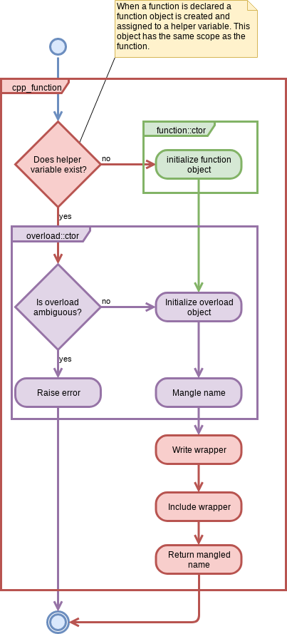

CMakePP Function Implementation
Note
Since cpp_function does not appear to exist anymore, this page is not included in the documentation.
This page describes how functions work in the CMakePP language.
What it Looks Like to the User
To frame our developer discussion let’s reiterate how CMakePP functions look to
users of the CMakePP language. To that end, let’s assume our user is declaring
a function foo, which takes an int and a bool. For this scenario,
the user writes code something akin to:
include(cmakepp_lang/function/function)
cpp_function(foo int bool)
function(${foo} arg0 arg1)
# Implement the foo(int, bool) function
endfunction()
When this code is run it will introduce a function foo into the current
scope. It is expected that users will be writing CMakePP functions in CMake
modules, hence usage of foo looks something like:
include(path/to/foo/module)
foo(3 TRUE)
It bears mentioning that functions in the CMakePP language can be variadic and they can be overloaded for different numbers/types of positional arguments.
Implementation
Like C++, each overload of a function is actually mapped to a unique name. The process of mapping overloads to unique names is called name mangling. It is the mangled name that is returned from cpp_function. Hence, when a user does:
cpp_function(foo int)
function("${foo}" arg0)
endfunction()
What they are really doing is defining a function whose name is the mangled
name. In order to give the user the illusion of overloads, as part of
cpp_function, the CMakePP language creates a wrapper function foo whose
contents are:
macro(foo)
_cpp_function_call_overload("foo" ${ARGN})
endmacro()
This wrapper ultimately mangles the name of the function with the arguments, then uses the initializer function pattern to call the implementation defined under the mangled name.
Determining the mangled name is a little bit tricky because the same set of
objects could conceivably be given to multiple overloads. For example, calling
foo(3 hello) could be perceived as trying to call foo(int desc),
foo(int args), or foo(args). While the CMakePP language forbids the
user from defining more than one of these overloads at any given time, we
still need to know which overload the user defined. Rather than try all of the
possible overloads (the number of which grows linearly with the number of
arguments, ignoring implicit casts, or exponentially when we need to try
combinations of implicit casts) the CMakePP language simply keeps a record of
the overloads the user has defined so far for the function. This record is held
in a global map whose keys are the types provided to the signature and the
values are the mangled names. In practice, users tend to only define a couple
overloads for a function so we only need to consider an approximately constant
number of overloads.
The process is summarized in the following UML diagram.
Understanding Ambiguities
The largest problem with allowing overloads and variadic functions is that it becomes possible for a given set of arguments to resolve to more than one overload. We say two overloads of a function, \(O_a\) and \(O_b\), are ambiguous if the same set of arguments constitutes a valid input for either \(O_a\) or \(O_b\). The purpose of this section is to work out the scenarios under which \(O_a\) and \(O_b\) are ambiguous. To that end, note that a non-variadic overload which takes \(n\) arguments can be thought of as an ordered \(n\)-tuple such that the \(i\)-th element in the tuple is the type of the \(i\)-th positional argument. A variadic overload with \((n-1)\) required positional arguments can also be mapped to an \(n\)-tuple such that the first \((n-1)\) elements of the tuple are the types of the required positional arguments and the \(n\)-th element is an opaque object holding the provided variadic arguments.
Without loss of generality, we assume that our two overloads, \(O_a\) and \(O_b\) respectively take \(n\) and \(m\) total arguments such that \(n\le m\). As previously discussed, variadic arguments, if present, are wrapped into a single opaque object. For variadic functions, the opaque object is always the last element of the tuple. The first \(\ell\) elements of a tuple will be denoted with a superscript, for example the first \(\ell\) elements of \(O_a\) are denoted \(O_a^{(\ell)}\).
If \(n\) equals \(m\), there exists a trivial ambiguity when \(O_a^{(n)}\) equals \(O_b^{(m)}\), i.e., the overloads are exactly the same signature. For non-variadic functions this looks something like:
# Overload a with n == 2
cpp_function(a_fxn int bool)
function("${a_fxn}" arg0 arg1)
# Implementation goes here
endfunction()
# Overload b with m == 2
cpp_function(a_fxn int bool)
function("${a_fxn}" arg0 arg1)
# Implementation goes here
endfunction()
and for two variadic functions this looks like:
# Overload a with n == 2
cpp_function(a_fxn int args)
function("${a_fxn}" arg0)
# Implementation goes here
endfunction()
# Overload b with m == 2
cpp_function(a_fxn int args)
function("${a_fxn}" arg0)
# Implementation goes here
endfunction()
For \(n == m\), there additionally exists one non-trivial ambiguity when either \(O_a\) or \(O_b\) is variadic (if both are variadic only the trivial ambiguity exists). If we arbitrarily take \(O_a\) as being variadic then, for \(n == m\), if \(O_a^{(n-1)}\) are the same as \(O_b^{(n-1)}\) an ambiguity occurs. More concretely consider the following:
# Overload a
cpp_function(a_fxn int bool args) # n == 3
function("${a_fxn}" arg0 arg1)
endfunction()
# Overload b
cpp_function(a_fxn int bool path) # m == 3
function("${a_fxn}" arg0 arg1 arg2)
endfunction()
Here we can not distinguish a call to overload \(O_b\) from a call to
overload \(O_a\) with the path argument passed through args. In fact,
as long as overload \(O_a\) is variadic, this ambiguity is actually present
for any value of \(n\). For example in:
# Overload a
cpp_function(a_fxn int args) # n == 2
function("${a_fxn}" arg0)
endfunction()
# Overload b
cpp_function(a_fxn int bool path) # m == 3
function("${a_fxn}" arg0 arg1 arg2)
endfunction()
we can not distinguish a call to overload \(O_b\) from a call to overload
\(O_a\) with a bool and a path passed as args.
So far we have accounted for all ambiguities when \(O_a\) is variadic. If both \(O_a\) and \(O_b\) are non-variadic, then only the trivial ambiguity is possible. If \(O_a\) is non-variadic, but \(O_b\) is variadic an additional ambiguity occurs when \(m = n + 1\) and \(O_a^{(n)} == O_b^{(m-1)}\). This looks like:
# Overload a
cpp_function(a_fxn int bool) # n == 2
function("${a_fxn}" arg0 arg1)
endfunction()
# Overload b
cpp_function(a_fxn int bool args) # m == 3
function("${a_fxn}" arg0 arg1)
endfunction()
Here we can not distinguish a call to \(O_a\) from a call to \(O_b\) with no variadic arguments. These ambiguities are summarized in the following table.
Variadic? |
Ambiguous when: |
|
|---|---|---|
\(O_a\) |
\(O_b\) |
|
Yes |
Yes |
\(O_a^{(n-1)} == O_b^{(n-1)}\) |
Yes |
No |
\(O_a^{(n-1)} == O_b^{(n-1)}\) |
No |
Yes |
\(O_a^{(m-1)} == O_b^{(m-1)}\) |
No |
No |
\(O_a^{(n)} == O_b^{(m)}\) |